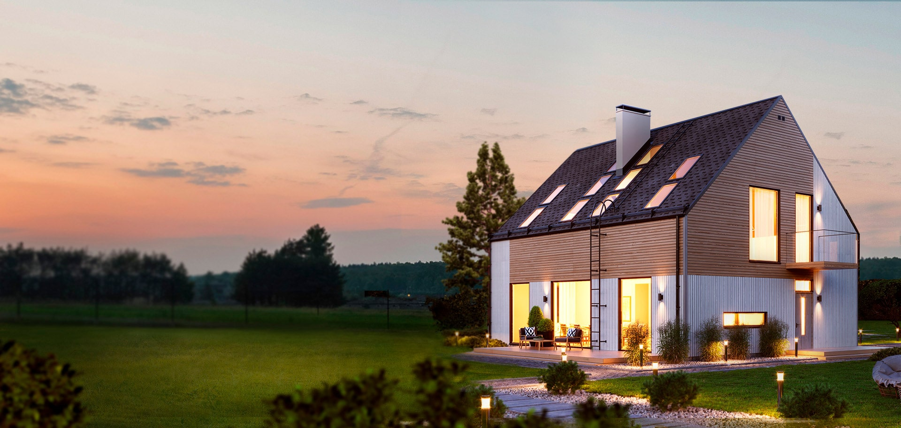
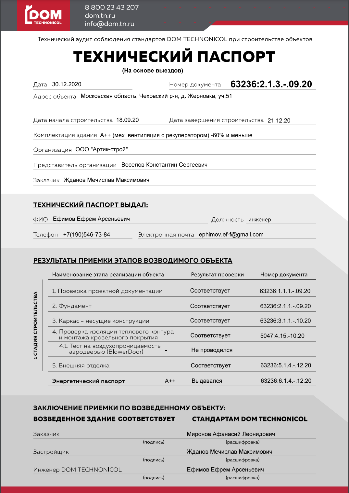
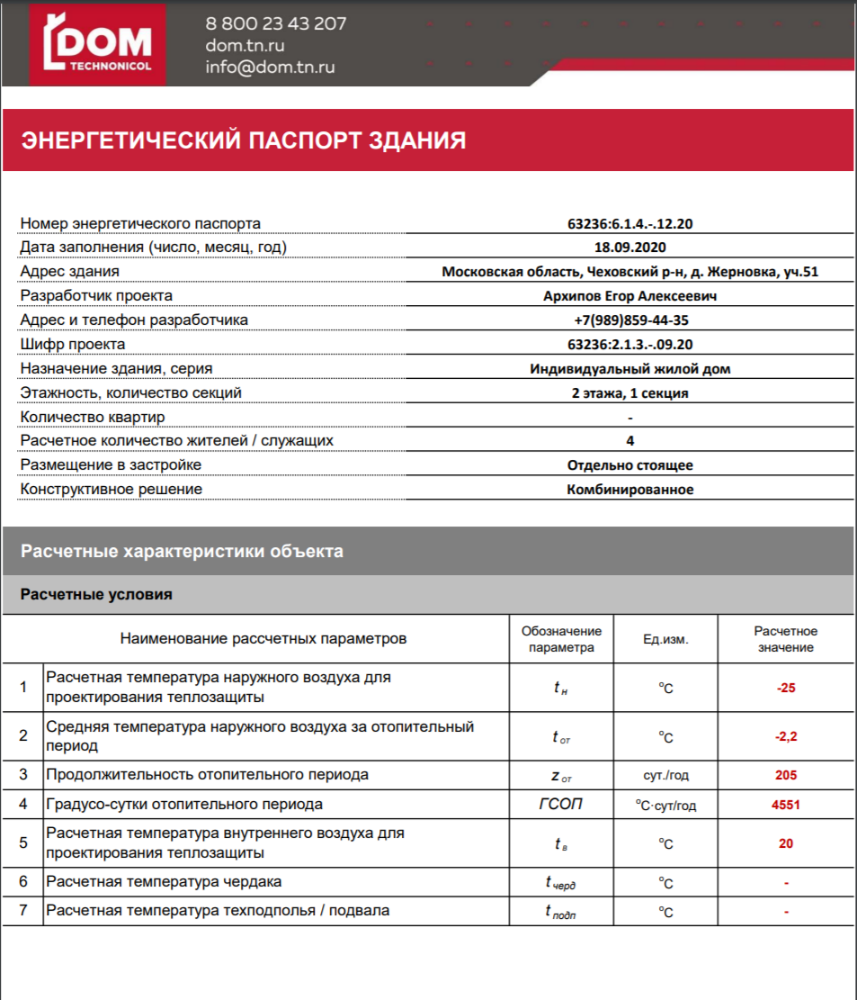
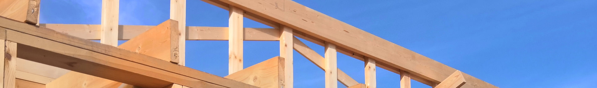
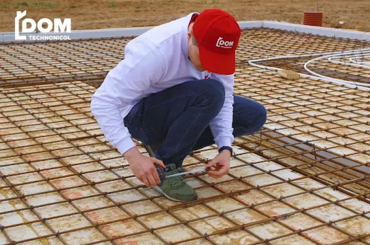

Технический аудит строительства частного дома ДОМ ТЕХНОНИКОЛЬ
Технический аудит — это услуга ДОМ ТЕХНОНИКОЛЬ. Мы прикрепляем к вашему объекту куратора — инженера Службы качества ДОМ ТЕХНОНИКОЛЬ. Куратор вместе с вами контролирует и принимает все этапы строительства вашего дома.
С техническим аудитом в строительстве:
Стройка для вас будет в радость!
Во время стройки мы постоянно волнуемся, что строители сделают что-то не так и после этого начнет течь крыша, в углах будет плесень, а трубы зимой будут замерзать. Доверьте контроль Службе качества: на ваш объект приедет инженер, принявший десятки объектов. Он знает, в какие моменты что нужно проконтролировать.
Вы освободите время для близких и любимых занятий
Если вы не разбираетесь в строительстве, вам не нужно будет смотреть обучающие видео, читать десятки страниц форумов и ежедневно приезжать по несколько раз на площадку, чтобы контролировать стройку. А это время вы можете посвятить более важным и интересным вещам:
- пойти с семьей в кино,
- закончить ответственный проект на работе,
- пойти в спортзал.
Конечно, если вам интересна стройка, вы также можете присутствовать на всех этапах приемки и проконтролировать процесс. Привет, ты сегодня вечером на стройке? Я свободен! Инженер ДОМ ТЕХНОНИКОЛЬ все проверит за меня. Ура!
Привет, ты сегодня вечером на стройке?
Я свободен! Инженер ДОМ ТЕХНОНИКОЛЬ все проверит за меня.
Ура!
Вы заработаете при продаже дома
Дом мы строим для себя и надолго, но обстоятельства бывают разные. Вы переезжаете, потому что вы нашли новую, более высокооплачиваемую работу, перевелись на удаленный формат и хотите жить у моря или просто строите дом побольше в престижном районе.
По завершении технического аудита мы передадим вам два документа, которые повысят стоимость продажи: технический паспорт и энергетический паспорт.
Оба документа, фотоотчеты о ходе строительства, акты приемки будут доступны по ссылке на нашем сайте. Вы сможете передать ссылку покупателю, и он убедится, что покупает не кота в мешке, а дом, построенный по всем стандартам ДОМ ТЕХНОНИКОЛЬ.

Технический паспорт свидетельствует о том, что дом построен в соответствии со стандартами ДОМ ТЕХНОНИКОЛЬ. Что он построен качественно и отвечает требованиям энергоэффективности.

Документ сделан для типового проекта DTN AXIOM 120-5 расположенного в Москве.
В паспорте приведены все ключевые характеристики оболочки дома и итоговый результат
расчета
энергопотребления дома.
Паспорт сообщает нам, что проект отнесен к классу А++ т.к. экономия по отношению к
минимальным требованиям
61% (Класс А++ это все проекты с экономией более 60%)
Примечание: проект можно улучшить, установив рекуперацию тепла системы
вентиляции.

Как мы принимаем этапы строительства
По стандартам ДОМ ТЕХНОНИКОЛЬ строительный процесс разбит на ряд контрольных точек, соответствующих определенным стадиям готовности. Сколько их будет в вашем доме, зависит от выбранного фундамента и стадии строительства.
Для каждого этапа мы подготовили чек-листы приемки, в которых прописано, какие параметры необходимо проверить.
Чек-листы будут вам доступны для каждого этапа. По ним вы сможете провести проверку самостоятельно. Техаудит за строительством частного дома от ДОМ ТЕХНОНИКОЛЬ — это дополнительная гарантия качества выполненных работ.
Оба документа, фотоотчеты о ходе строительства, акты приемки будут доступны по ссылке на нашем сайте. Вы сможете передать ссылку покупателю, и он убедится, что покупает не кота в мешке, а дом, построенный по всем стандартам ДОМ ТЕХНОНИКОЛЬ.
Пример. Принимаем опалубку фундамента
Вы выбрали фундамент УШП. До заливки бетона нужно проверить, верно ли выполнена опалубка фундамента (форма, в которую будет заливаться бетон). Если опалубка собрана с ошибками или подрядчик использовал не те материалы, это может привести к тому, что фундамент станет ненадежным, растрескается.
Чек-лист приемки опалубки состоит из 36 пунктов : Проверяем наличие документации на УШП, производим обмер опалубки, контролируем ее армирование, проверяем, что форма не грязная, выводы коммуникаций и разводку теплого пола. Если все в порядке, можно приступать к бетонированию. Отклонения от нормы подлежат исправлению.

Технадзор ДОМ ТЕХНОНИКОЛЬ. Часть 1. УШП
Технадзор ДОМ ТЕХНОНИКОЛЬ. Часть 1. УШП
Технадзор ДОМ ТЕХНОНИКОЛЬ. Часть 1. УШП
Как проходит технический аудит
- По завершении очередного этапа инженер Службы качества выезжает на объект. Конкретная дата будет с вами согласована.
- На объекте инженер проверяет качество выполненных работ и организацию процессов на стройплощадке по чек-листу и выносит заключение.
- По завершении проверки три стороны — вы, подрядчик и инженер — подписывают акт выполненных работ.
- Если в акте зафиксированы недоработки и отклонения от нормы, строители их устраняют.
- Инженер Службы качества проверяет и принимает выполненные исправления.
Весь процесс проверки и согласования фиксируется в Личном кабинете на сайте dom.tn.ru
Посмотрите, как выглядит процесс на реальном объекте
Технический аудит помогает строить надежные дома
Истории строительства, в которых инженер Технического аудита помог найти недочеты и предотвратил некачественный монтаж